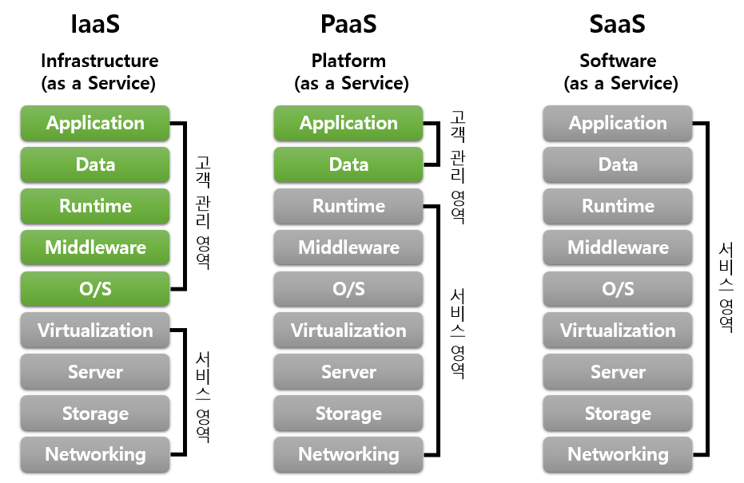

언제 어디서나 데이터와 프로그램을 사용할 수 있게 만든 핵심 컴퓨터 기술
메인 소개 문구
| 시기 | 주요 내용 |
|---|---|
| 1960년대 | 여러 사용자가 하나의 대형 컴퓨터를 함께 사용하는 ‘시분할 시스템’이 등장했습니다. 클라우드 컴퓨팅의 초기 개념으로 볼 수 있습니다. |
| 1970년대 | 하나의 물리적 컴퓨터를 여러 개의 가상 컴퓨터처럼 사용하는 가상화 기술이 발전했습니다. |
| 1990년대 | 인터넷이 대중화되면서 네트워크를 통해 프로그램과 서비스를 제공할 수 있는 환경이 만들어졌습니다. |
| 1999년대 | Salesforce가 인터넷을 통해 고객 관리 소프트웨어를 제공하면서 서비스형 소프트웨어가 널리 알려지기 시작했습니다. |
| 2000년대 | Amazon, Google, Microsoft 등의 기업이 저장 공간과 서버를 인터넷으로 제공하기 시작했습니다. |
| 2010년대 | 스마트폰과 스트리밍 서비스가 성장하면서 클라우드 컴퓨팅이 일상생활과 기업 활동 전반에 활용되었습니다. |
| 현재 | 인공지능, 빅데이터, 사물인터넷, 온라인 게임 등 다양한 분야에서 클라우드가 핵심 기반 기술로 사용되고 있습니다. |
